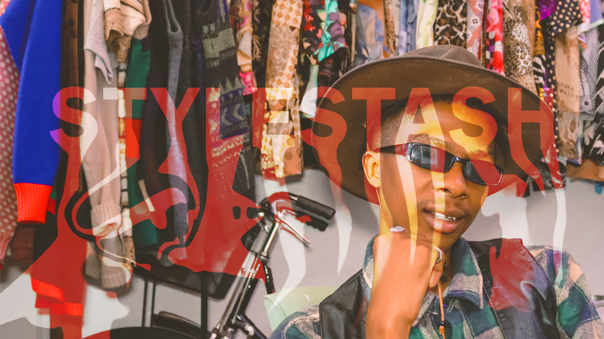
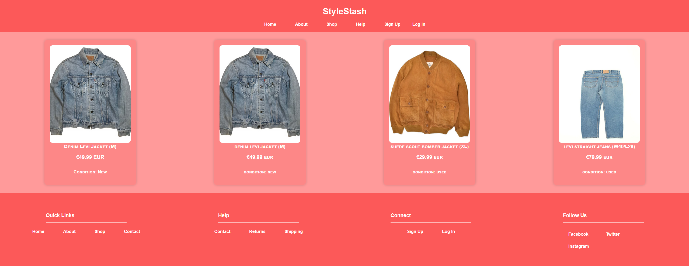
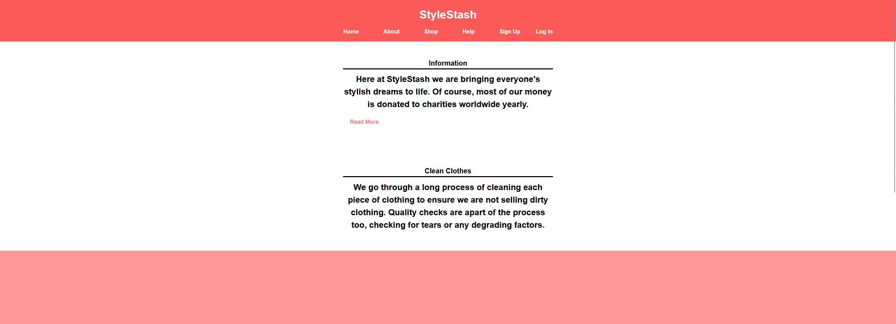
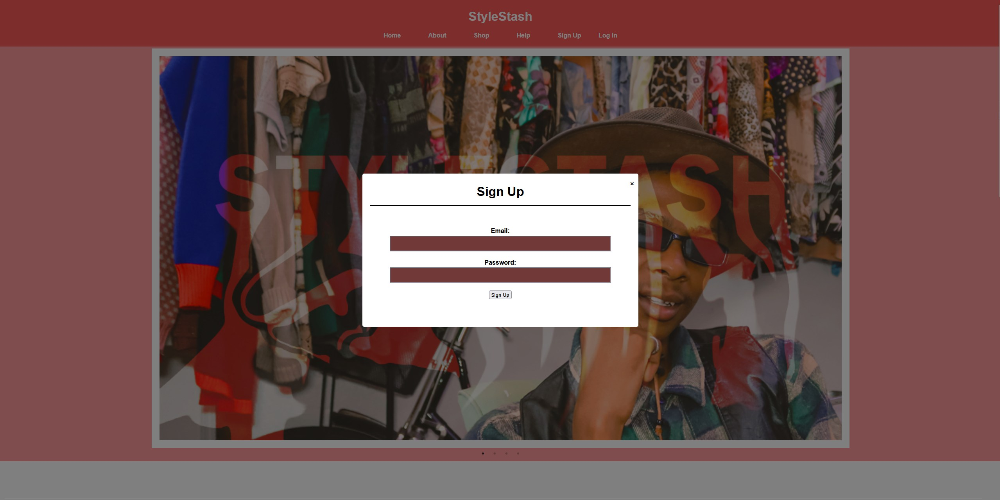
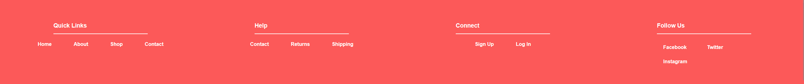

StyleStash

Project Brief
The goal of this project was to create StyleStash, a fully functional fashion e-commerce website for second-hand clothing, designed as part of a college assignment. The brief emphasized usability, interactivity, and a modern aesthetic that would appeal to a style-conscious audience looking for affordable, pre-loved fashion.
Audience: Young adults and students interested in sustainable, second-hand shopping.
Requirements:
Interactive homepage with kinetic text animation and auto-scrolling image carousel, easy navigation, shop page with item details, and user account features.
Deliverables: Multi-page, fully responsive website with homepage, shop, about, help, login, and signup functionality.
Process
I began by designing a homepage that felt interactive and dynamic. The centerpiece is an animated “kinetic text” feature that swaps out words every few seconds, keeping the page visually engaging. The hero image section is a draggable carousel that also auto-scrolls, encouraging exploration.
I added a Start Shopping button as a clear call to action, leading users directly to the shop page. The shop itself displays items with Price, Sizing, and Condition, providing transparency since this is a second-hand store.
For the About page, I implemented a Read More / Read Less toggle, allowing users to expand the content without overwhelming them with too much text at once.

User interaction was an important focus — I included a Sign Up overlay, which allows users to register without leaving the page, while Log In has its own dedicated page for simplicity. The Help page gives users access to contact info, returns policy, and shipping details. The footer contains quick links and social media icons for easy navigation.


Final Look
The finished website has a clean, contemporary aesthetic with bold typography and a bright color scheme to match the playful, fashion-forward theme. The kinetic text adds energy and personality, while the carousel encourages users to interact with the homepage.
Navigation is smooth, with quick access to shopping and support pages, and the Sign Up overlay creates a seamless user experience. The final product is a fully functional, multi-page site that feels professional yet approachable, aligning with the sustainable fashion ethos of the project.


Looking at the completed project, I feel that StyleStash strikes a strong balance between interactivity and usability. Each feature contributes to creating an engaging and smooth experience for users while keeping the design consistent across pages.
Reflection
This project allowed me to combine front-end development skills with UI/UX design principles to create an engaging and user-friendly site. One of the most successful elements is the kinetic text animation, which immediately draws attention and sets the tone for the brand.
I also learned the importance of balancing interactivity with clarity — for example, the Read More / Read Less feature kept the About page tidy without losing key information.
Overall, StyleStash successfully delivers an interactive, functional shopping experience while maintaining a visually appealing and modern aesthetic. This project strengthened my ability to design for real users, create responsive layouts, and think critically about how each feature contributes to the overall user journey.